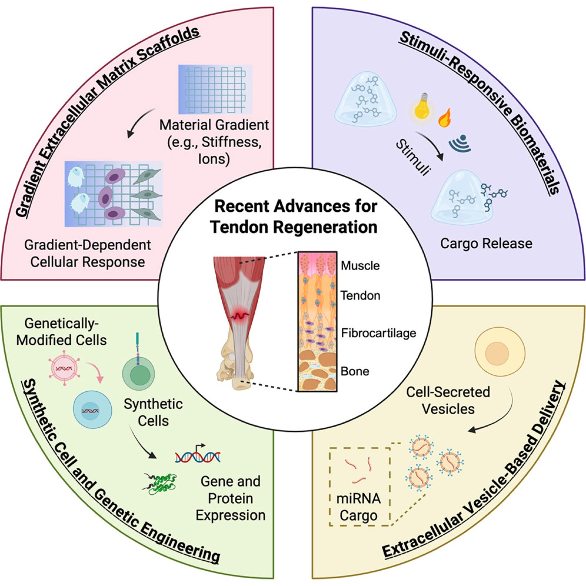
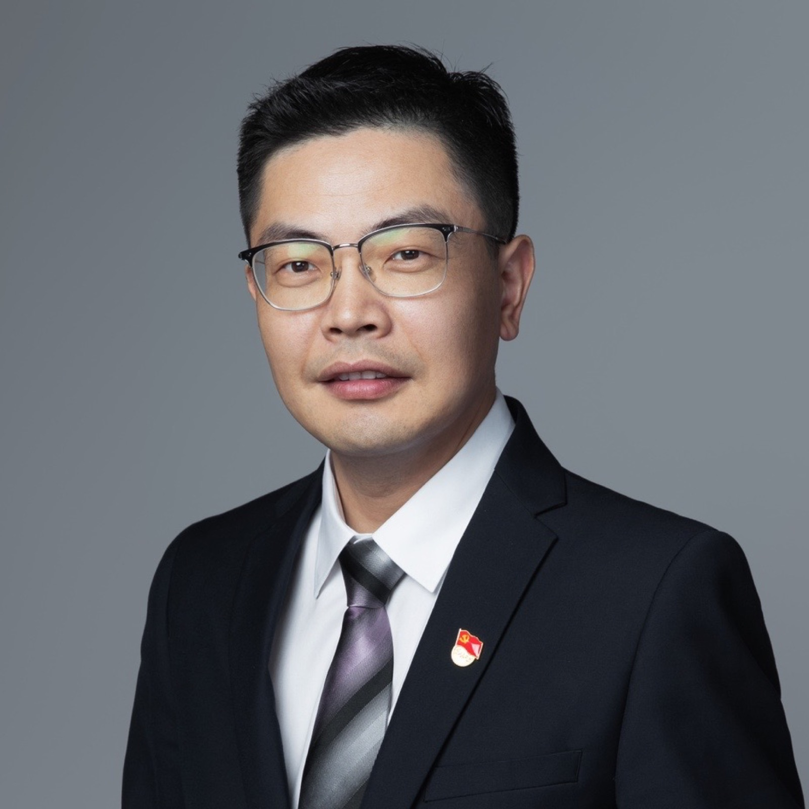
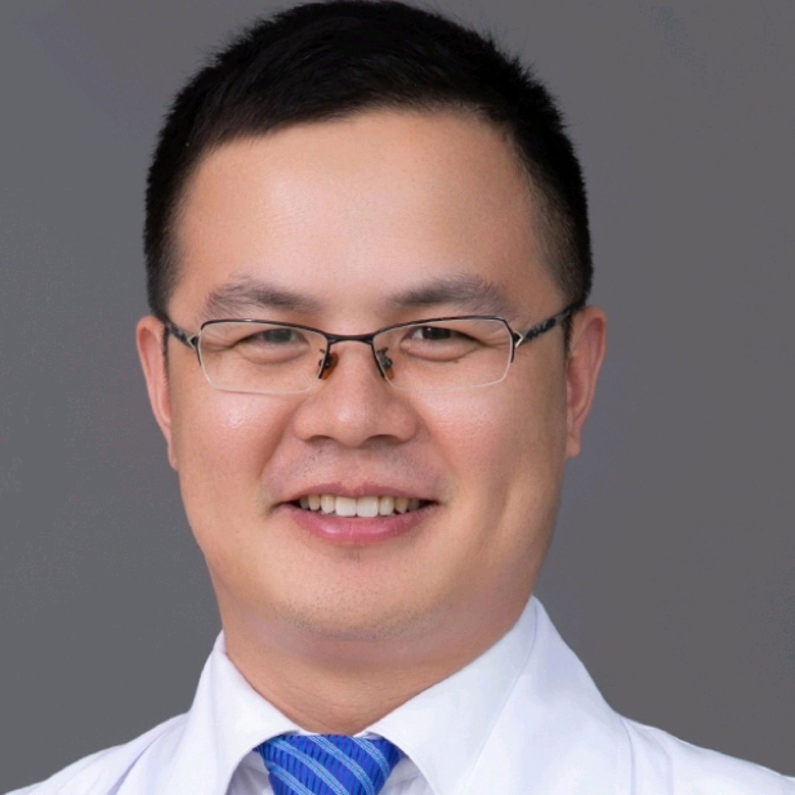
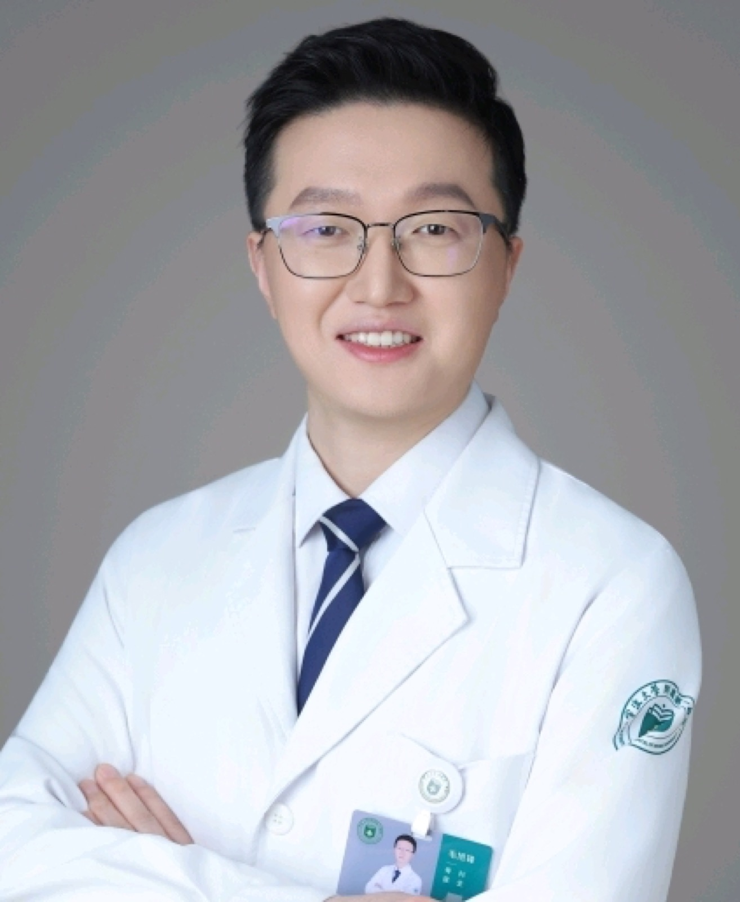
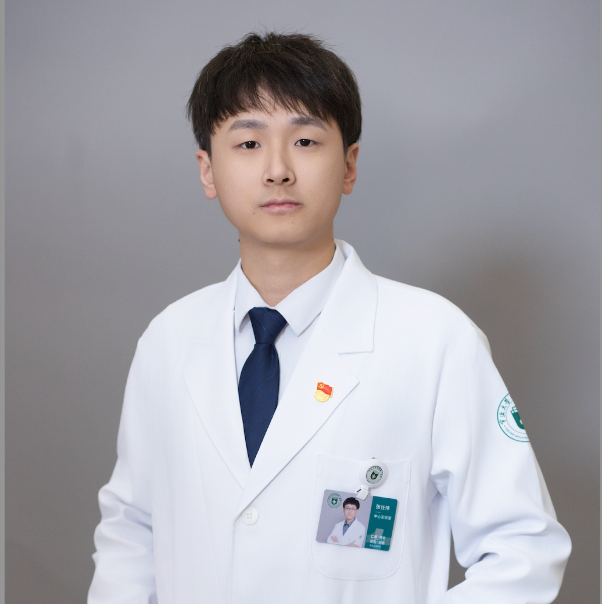

疾病机制研究
结合临床样本、细胞模型和多组学数据，解析疾病发生发展中的关键分子事件与调控网络。
Haijiao Lab · Clinical Translation · Precision Medicine
Haijiao Lab 依托宁波大学附属第一医院，聚焦跟腱损伤与足踝疾病诊疗需求，融合临床医学、生物化学、分子机制研究与转化医学技术，推动从临床样本到组织修复机制解析、从科学发现到诊疗应用的闭环研究。

实验室简介
Haijiao Lab 由毛海蛟主任医师领衔建设。毛海蛟现任宁波大学附属第一医院副院长、党委委员，骨科学科带头人，长期深耕骨科临床诊疗、医学研究与医院学科建设。
团队聚焦骨科创伤、足踝外科、组织修复与临床转化问题，结合临床队列、机制研究和生物医学工程平台，推动从临床问题到诊疗工具的研究闭环。
研究方向
团队从骨科临床问题出发，连接疾病机制、组织修复、诊疗标志物和工程化平台建设。
结合临床样本、细胞模型和多组学数据，解析疾病发生发展中的关键分子事件与调控网络。
面向诊疗痛点建立从临床问题、机制验证到应用评估的研究路径，推动科研成果向临床场景转化。
探索可用于疾病分型、预后判断和疗效预测的分子标志物，为个体化诊疗提供依据。
建设规范化临床队列、样本库与数据资源，支撑高质量医学研究和多学科协作。
团队成员
团队成员覆盖骨科临床诊疗、足踝与创伤修复、金属生命科学、生物医学工程和分子诊疗等方向。

实验室组长 | 副院长、党委委员
中共党员，博士，教授，主任医师，博士生导师，宁波市拔尖人才。长期从事骨科专业，亚专业方向为足踝外科，主持国家、省市级科研项目13项，以第一或通信作者发表SCI论文17篇。

副主任医师 | 硕士研究生
中共党员，擅长四肢骨折和足踝慢性损伤的诊断治疗。发表多篇SCI及核心期刊论文，主持两项市级课题。

主治医师 | 硕士研究生
擅长手外科疾病和创伤骨科常见疾病，尤其是老年骨折的个体化诊治、机器人辅助下骨折微创治疗。主持或参与国自然1项、省自然2项、省部共建重点项目1项、市级重大（重点）项目2项，发表SCI论文13篇，授权国家发明专利1项。

特聘副研究员 | 独立PI
围绕金属生命科学、生物医学工程和分子诊疗开展研究，依托 M-Group 面向跟腱损伤、病理性生物矿化、口腔疾病、肿瘤靶向和PET/CT分子影像等临床问题建设工程化平台。
论文成果
聚焦肌腱与骨组织修复、生物材料、疾病免疫微环境、足踝与创伤骨科临床研究等方向，主要合作者包括赵基源、李斌、韩凤选等。
Chen Q., Ma J., Yu S., Su Y., Guo H., Jiang H., He H., Hu J., Liu Y., Yao L., Meng B., Yuan Z., Shu W., Wang L., Mao H., Zhang M., Li B., Han F. “Small Dots, Multiple Functions”: Unveiling the Veil of a Bioactive Quercetin Carbon Dot and Its Multifaceted Antibacterial and Osteogenesis Mechanisms for Infectious Bone Defect Repair. Advanced Functional Materials. 2025. DOI: 10.1002/adfm.202507840.
Xie E., Yuan Z., Chen Q., Hu J., Li J., Li K., Wang H., Ma J., Meng B., Zhang R., Mao H., Liang T., Wang L., Liu C., Li B., Han F. Programmed Transformation of Osteogenesis Microenvironment by a Multifunctional Hydrogel to Enhance Repair of Infectious Bone Defects. Advanced Science. 2025. DOI: 10.1002/advs.202409683.
Li G., Ni R., Shi Z., Mao H., Luo Y., Cao X., Zhang C., Liu Y., Jin Z., Chen J., Fu J., Zhang H., Zhu Y. Enhancing BMSC chondrogenesis with a dynamic viscoelastic hyaluronan hydrogel loaded with kartogenin for cartilage repair. International Journal of Biological Macromolecules. 2025. DOI: 10.1016/j.ijbiomac.2025.144042.
Li G., Luo Y., Hu Z., Shi Z., Cao X., Xu R., Mi Y., Yao Y., Mao H., Zhang H., Zhu Y. Recent Advances in Peptide-Functionalized Hydrogels for Bone Tissue Engineering. ACS Biomaterials Science & Engineering. 2025;11(4):1970-1989. DOI: 10.1021/acsbiomaterials.4c02198.
Li K., Xie E., Liu C., Hu W., Chen Q., Li J., Wang H., Meng Q., Liu D., Meng B., Liang T., Ma J., Yuan Z., Wang L., Shu W., Mao H., Han F., Li B. “Disguise strategy” to bacteria: A multifunctional hydrogel with bacteria-targeting and photothermal conversion properties for the repair of infectious bone defects. Bioactive Materials. 2025. DOI: 10.1016/j.bioactmat.2025.02.002.
Qiu H., Mao X., Pan G., Cai X., Zhao X., Wu X., Shao L., Mao H., Xiong D., Wang R. A fluorescent hyaluronic acid-gelatin hydrogel for traceable articular cartilage regeneration. International Journal of Biological Macromolecules. 2025. DOI: 10.1016/j.ijbiomac.2025.140905.
Yao Z., Yuan Z., Chen Q., Yao L., Zhang X., Gao X., Wu S., Shao Y., Feng J., Mao X., Shu W., Wu J., Li B., Han F., Mao H. Injectable melatonin carbon dot composite hydrogel enhances anti-inflammatory and tenogenic differentiation of tendon-derived stem cells for minimally invasive treatment of Achilles tendinopathy. Chemical Engineering Journal. 2025. DOI: 10.1016/j.cej.2025.160720.
Peng J., Zhu W., Zhang C., Yin S., Ye J., Mao H., Li M., Zhao J. COL4A2 drives ECM remodeling and stiffness increasing to promote breast cancer metastasis via YAP signaling pathway in dECM induced models. Biomaterials Advances. 2025. DOI: 10.1016/j.bioadv.2025.214430.
Mao X., Wang Y., Zhang X., Yao Z., Yuan Z., Yao L., Wang L., Mao H. Decellularised amniotic membrane-TDSCs composite promotes Achilles tendon healing. Scientific Reports. 2025;15. DOI: 10.1038/s41598-025-00596-0.
Li M., Zhu W., Hu M., Mao X., Weng B., Peng J., Yin S., Mao H., Zhao J. Dynamic profiling of BMSC-dECM reveals accumulation of core matrisome proteins suppresses osteogenic differentiation and bone regeneration. Journal of Advanced Research. 2025. DOI: 10.1016/j.jare.2025.05.023.
Gao X., Wu S., Yao Z., Shao Y., Feng J., Yuan Z., Mao H. Engineered decellularized tendon hydrogel with sustained zinc ion release orchestrates anti-inflammatory microenvironment and functional regeneration in Achilles tendinopathy. Materials Today Bio. 2025. DOI: 10.1016/j.mtbio.2025.102104.
Yao L., Mao H., Dong W., Wu Z., Liu Q. Application of the distraction support in intramedullary nailing treatment for tibial shaft fracture. Chinese Journal of Traumatology. 2025. DOI: 10.1016/j.cjtee.2024.10.004.
Yuan Z., Yao Z., Mao X., Gao X., Wu S., Mao H. Epigenetic mechanisms in stem cell therapies for achilles tendinopathy. Frontiers in Cell and Developmental Biology. 2025. DOI: 10.3389/fcell.2025.1516250.
Jiang H., Chen Q., Yu S., Zhang J., Wang C., Hu J., He H., Mao H., Han F. Optimization of QCDs synthesis temperature for enhanced biocompatibility, antibacterial activity, and osteogenic potential. Materials Today Communications. 2025. DOI: 10.1016/j.mtcomm.2025.114376.
Qiu H., Pan G., Mao X., Cai X., Song L., Shao L., Mao H., Wang R., Xiong D. A shear-responsive and lubricating hyaluronic acid-chondroitin sulfate-decellularized matrix hydrogel for articular cartilage regeneration. Carbohydrate Polymers. 2024. DOI: 10.1016/j.carbpol.2024.123171.
Zhang X., Li M., Mao X., Yao Z., Zhu W., Yuan Z., Gao X., Pan S., Zhang Y., Zhao J., Mao H. Small Intestinal Submucosa Hydrogel Loaded With Gastrodin for the Repair of Achilles Tendinopathy. Small. 2024;20(47). DOI: 10.1002/smll.202401886.
Zhu W., Shi J., Weng B., Zhou Z., Mao X., Pan S., Peng J., Zhang C., Mao H., Li M., Zhao J. EVs from cells at the early stages of chondrogenesis delivered by injectable SIS dECM promote cartilage regeneration. Journal of Tissue Engineering. 2024;15. DOI: 10.1177/20417314241268189.
Mao X., Zhang X., Qiu H., Yao Z., Wu S., Gao X., Zhao J., Mao H. Gelatin-methacrylate microspheres loaded with tendon-derived stem cells facilitate tendinopathy healing. Materials & Design. 2024. DOI: 10.1016/j.matdes.2024.113169.
Zhang X., Wang D., Shao J., Mao H., Ding C., Yan Y. Hydrophilic materials based on hydrogel polymers for enrichment of glycopeptides from serum of colorectal cancer patients. Journal of Separation Science. 2024;47(16). DOI: 10.1002/jssc.202400310.
Ma J., Chen Q., He H., Jiang H., Hu J., Liu Y., Yao L., Mao H., Li J., Li B., Han F. Carbon dots-based materials and their applications in regenerative medicine. MedComm - Biomaterials and Applications. 2024. DOI: 10.1002/mba2.98.
Dong W., Lian W., Mao H., Yao L., Wu Z. Effectiveness of minimally invasive internal fixation with locking plates for mid-shaft clavicle fractures. Chinese Journal of Reparative and Reconstructive Surgery. 2024. DOI: 10.7507/1002-1892.202404037.
Tian H., Cao J., Li B., Nice E.C., Mao H., Zhang Y., Huang C. Managing the immune microenvironment of osteosarcoma: the outlook for osteosarcoma treatment. Bone Research. 2023;11. DOI: 10.1038/s41413-023-00246-z.
Weng B., Li M., Zhu W., Peng J., Mao X., Zheng Y., Zhang C., Pan S., Mao H., Zhao J. Distinguished biomimetic dECM system facilitates early detection of metastatic breast cancer cells. Bioengineering & Translational Medicine. 2023. DOI: 10.1002/btm2.10597.
Yi L., Wang B., Feng Q., Yan Y., Ding C., Mao H. Surface functionalization modification of ultra-hydrophilic magnetic spheres with mesoporous silica for specific identification of glycopeptides in serum exosomes. Analytical and Bioanalytical Chemistry. 2023. DOI: 10.1007/s00216-023-04575-0.
Mao X., Zhang X., Yao Z., Mao H. Advances in mesenchymal stem cells therapy for tendinopathies. Chinese Journal of Traumatology. 2023. DOI: 10.1016/j.cjtee.2023.11.002.
Yao L., Mao H., Dong W., Wu Z., Liu Q. Comparison of a minimally invasive osteosynthesis technique with conventional open surgery for transverse patellar fractures. Chinese Journal of Traumatology. 2023. DOI: 10.1016/j.cjtee.2023.04.005.
Mao H., Wang L., Yao L., Dong W. Assessment of the Initial Result of Screw Fixation for Proximal Crescentic Metatarsal Osteotomy with Distal Soft Tissue Reconstruction in Severe Hallux Valgus Treatment. Current Medical Imaging. 2023;20. DOI: 10.2174/1573405620666230804093355.
Liu C., Yu Q., Yuan Z., Guo Q., Liao X., Han F., Feng T., Liu S., Zhao R., Zhu Z., Mao H., Zhu C., Li B. Engineering the viscoelasticity of gelatin methacryloyl (GelMA) hydrogels via small “dynamic bridges” to regulate BMSC behaviors for osteochondral regeneration. Bioactive Materials. 2022;16:330-342. DOI: 10.1016/j.bioactmat.2022.07.031.
Yu Q., Han F., Yuan Z., Zhu Z., Liu C., Tu Z., Guo Q., Zhao R., Zhang W., Wang H., Mao H., Li B., Zhu C. Fucoidan-loaded nanofibrous scaffolds promote annulus fibrosus repair by ameliorating the inflammatory and oxidative microenvironments in degenerative intervertebral discs. Acta Biomaterialia. 2022;148:73-89. DOI: 10.1016/j.actbio.2022.05.054.
Mao X., Yao L., Li M., Zhang X., Weng B., Zhu W., Ni R., Chen K., Yi L., Zhao J., Mao H. Enhancement of Tendon Repair Using Tendon-Derived Stem Cells in Small Intestinal Submucosa via M2 Macrophage Polarization. Cells. 2022;11(17):2770. DOI: 10.3390/cells11172770.
Zheng Y., Li M., Weng B., Mao H., Zhao J. Exosome-based delivery nanoplatforms: next-generation theranostic platforms for breast cancer. Biomaterials Science. 2022;10:1099-1112. DOI: 10.1039/d2bm00062h.
Hua S., Feng Q., Xie Z., Mao H., Zhou Y., Yan Y., Ding C. Post-synthesis of covalent organic frameworks with dual-hydrophilic groups for specific capture of serum exosomes. Journal of Chromatography A. 2022;1681:463406. DOI: 10.1016/j.chroma.2022.463406.
Sun H., Wang H., Zhang W., Mao H., Li B. Single-cell RNA sequencing reveals resident progenitor and vascularization-associated cell subpopulations in rat annulus fibrosus. Journal of Orthopaedic Translation. 2022;38:176-188. DOI: 10.1016/j.jot.2022.11.004.
Zhang C., Xia D., Li J., Zheng Y., Weng B., Mao H., Mei J., Wu T., Li M., Zhao J. BMSCs and Osteoblast-Engineered ECM Synergetically Promotes Osteogenesis and Angiogenesis in an Ectopic Bone Formation Model. Frontiers in Bioengineering and Biotechnology. 2022;10:818191. DOI: 10.3389/fbioe.2022.818191.
Yao L., Dong W., Wu Z., Zhao Q., Mao H. Ultrasound-guided interscalene block versus intravenous analgesia and sedation for reduction of first anterior shoulder dislocation. The American Journal of Emergency Medicine. 2022;58:104-108. DOI: 10.1016/j.ajem.2022.03.047.
Li M., Zhang A., Li J., Zhou J., Zheng Y., Zhang C., Xia D., Mao H., Zhao J. Osteoblast/fibroblast coculture derived bioactive ECM with unique matrisome profile facilitates bone regeneration. Bioactive Materials. 2020;5(4):938-948. DOI: 10.1016/j.bioactmat.2020.06.017.
Mao H., Wang H., Zhao J., Wang L., Yao L., Wei K. Initial assessment of treatment of talar posterior process fractures with open reduction and percutaneous fixation. Scientific Reports. 2020;10. DOI: 10.1038/s41598-020-77151-6.
Mao H., Wang H., Wang L., Yao L. Definition of a safe zone for screw fixation of posterior talar process fracture by 3-dimensional technology. Medicine. 2018;97(49):e13331. DOI: 10.1097/md.0000000000013331.
Mao H., Wang L., Dong W., Liu Z., Yin W., Xu D.-C., Wapner K.L. Anatomical feasibility study of flexor hallucis longus transfer in treatment of Achilles tendon and posteromedial portal of ankle arthroscopy. Surgical and Radiologic Anatomy. 2018;40:907-912. DOI: 10.1007/s00276-018-2021-5.
Yao L., Wang H., Dong W., Liu Z., Mao H. Efficacy and safety of bisphosphonates in management of low bone density in inflammatory bowel disease. Medicine. 2017;96(3):e5861. DOI: 10.1097/md.0000000000005861.
Mao H., Dong W., Shi Z., Yin W., Xu D.-C., Wapner K.L. Anatomical Study of the Neurovascular in Flexor Hallucis Longus Tendon Transfers. Scientific Reports. 2017;7. DOI: 10.1038/s41598-017-13742-0.
Dong W., Shi Z., Liu Z., Mao H. Indirect reduction technique using a distraction support in minimally invasive percutaneous plate osteosynthesis of tibial shaft fractures. Chinese Journal of Traumatology. 2016;19(6):330-334. DOI: 10.1016/j.cjtee.2016.09.001.
Mao H., Shi Z., Wapner K.L., Dong W., Yin W., Xu D.-C. Anatomical study for flexor hallucis longus tendon transfer in treatment of Achilles tendinopathy. Surgical and Radiologic Anatomy. 2014;37:639-647. DOI: 10.1007/s00276-014-1399-y.
Mao H., Shi Z., Liu Z., Wang H., Xu D.-C. Minimally invasive technique for medial subtalar dislocation associated with navicular and entire posterior talar process fracture: A case report. Injury. 2014;46(4):759-762. DOI: 10.1016/j.injury.2014.12.002.
科研资源
新闻动态
Haijiao Lab 完成中文官网信息更新，集中展示团队成员、代表性成果和转化研究方向。
加入我们
团队长期欢迎具有临床医学、生物化学、材料工程、分子影像、数据分析和转化医学背景的青年医生、研究生与合作伙伴联系交流。